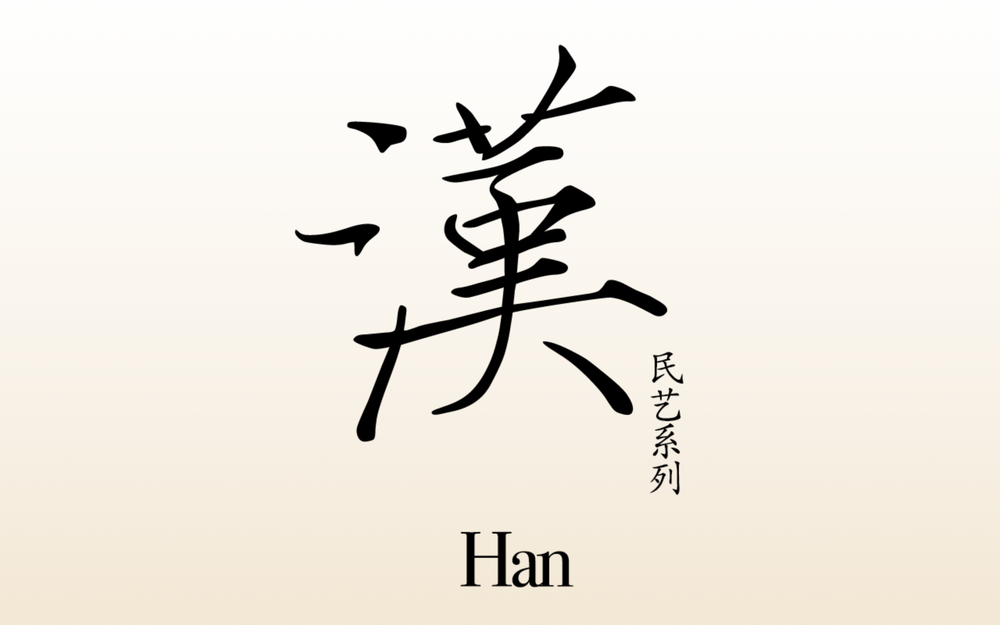
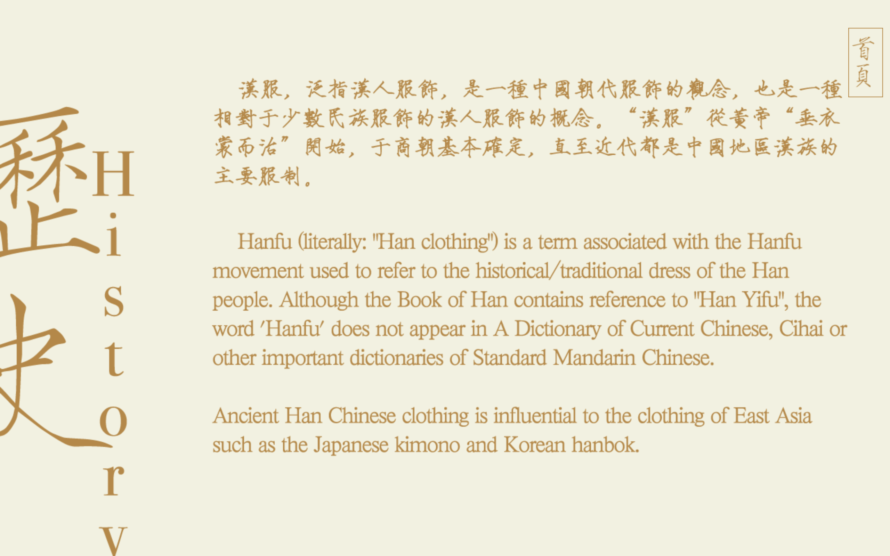

Han
Group Project Spring 2018
Tags: Responsive Web, Interactive, Chinese Culture
Toolkits: p5.js, HTML, CSS
Han Fu(Han Clothes) are traditional clothes for Chinese people in the past, which also has some cultural meaning in it. But few people know it nowadays. Therefore, We want to use the web as an approach to let more people feel the beauty of Han Fu.
Process:
I. Intro Page

Before everything begins, we have an intro page showing users the title of our project. Also, this page leaves the user the first impression of the website: they will kind of get the design style of the whole website, which is pretty Chinese and simple.
II. Home
 This page builds an interaction that users can swipe the lantern to view six different styles of Hanfu. On the left side, is the name of the Hanfu. Also, an instruction “Press Space to enter design page”. On the right side, is the basic knowledge of this specific type of Hanfu.
This page builds an interaction that users can swipe the lantern to view six different styles of Hanfu. On the left side, is the name of the Hanfu. Also, an instruction “Press Space to enter design page”. On the right side, is the basic knowledge of this specific type of Hanfu.
III. Design

To make user focus more on the Hanfu itself, we make the GUI as simple as possible. The user can change color and add pattern by dragging and clicking.
The pattern can move, by P5.js, we can easily create moving patterns and drag the whole pgraphic to the position we want.
IV. History

To make users have a general idea of the history of Hanfu, we have a history page. No matter for Chinese users or foreign users, knowing background knowledge helps them to understand Hanfu better.